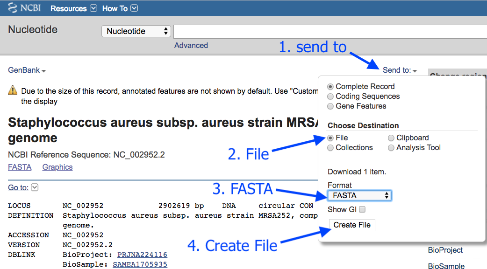

Using MLST for bacterial typing
A bacterial “type” is a particular species with certain features.
- For example, the bacterial type may be Staphyloccus aureus with resistance to penicillin.
- To “type” a bacteria, we can focus on several genes, and see which allele is present for each of these genes.
- Each bacterial species will have its own scheme, which is the set of genes that are looked at.
- Overall, this process is called multi-locus (= several genes) sequence typing, or MLST.
In this tutorial, we will perform MLST on a bacterial sequence.
Get data
- Log in to your Galaxy instance (for example, Galaxy Australia, usegalaxy.org.au).
If you are using Galaxy Australia, look for the file we need in the
- In the top centre panel, go to
Shared Data - Click
Histories - Click on the history named
MLST-tutorial - Click
Import (in the top right corner) - This should now be your current history.
Alternatively, we can get the sequence from Genbank.
- In a new browser tab, go to this address: https://www.ncbi.nlm.nih.gov/nuccore/NC_002952.2
- Click
Send to - Choose
File - Choose
FASTA - Click
Create File
This downloads

In the tool panel, go to
Choose local file : selectsequence.fasta Start Close
This file should now be in your History panel. When it has completed uploading, the file name will be green.
Run MLST
In the tool panel search box, search for MLST.
- Click
MLST
The tool interface will appear in the centre Galaxy panel.
- For
input_file , choose the sequence file that you uploaded, e.g.sequence.fasta - Click
Execute
What does MLST do?
- Takes a fasta or genbank file
- Scans this against all the typing schemes
- Finds the best match (e.g. a scheme for the correct species)
- Reports the output:
- the scheme chosen
- the sequence type (e.g. ST = 21)
- the genes in this scheme and the alleles found in the data
View results
The results file will be at the top of your history panel.
-
Click on the eye icon to view the output.
-
Your results will be a single line.

For example:
- Column 2: the scheme
- Column 3: the sequence type
- The rest of the columns: the gene names with the allele number in brackets. It is this combination of alleles that defines the sequence type.
In this example, our sequence type is ST=36. This is methicillin-resistant Staphylococcus aureus (or MRSA).
See this history in Galaxy
If you want to see this Galaxy history without performing the steps above:
- Log in to Galaxy Australia: https://usegalaxy.org.au/
- Go to
Shared Data - Click
Histories - Click
Completed-MLST-analysis - Click
Import (at the top right corner) - The MLST analysis should now be showing as your current history.
What’s next?
To use the tutorials on this website:
- ← see the list in the left hand panel
- ↖ or, click the menu button (three horizontal bars) in the top left of the page
You can find more tutorials at the Galaxy Training Network: